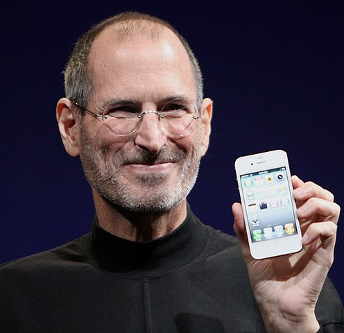

-

Steve Jobs
American business magnate
Steven Paul Jobs was an American business magnate, industrial designer, investor, and media proprietor. Wikipedia
- Born:
- Steven Paul Jobs February 24, 1955 San Francisco, California, United States
- Died:
- October 5, 2011 (aged 56) Palo Alto, California, United States
- Spouse:
- Laurene Powell (m. 1991-2011)
- Net worth:
- US$7 billion (September 2011)
- Children:
- Lisa Brennan-Jobs, Eve Jobs, Reed Jobs, Erin Siena Jobs, Erin Sienna
-
Crystal (programming language)
programming language
Crystal is a general-purpose, object-oriented programming language, designed and developed by Ary Borenszweig, Juan Wajnerman, Brian Cardiff and more than 300 contributors. Wikipedia
- Paradigm:
- Multi-paradigm: object-oriented, concurrent
- Designed by:
- Ary Borenszweig, Juan Wajnerman, Brian Cardiff
- Developer:
- Manas Technology Solutions
- First appeared:
- June 18, 2014; 6 years ago
- Preview release:
- 0.36.1 Edit this on Wikidata / 2 February 2021; 39 days ago
-

Novak Djokovic
Serbian tennis player
Novak Djokovic born 22 May 1987 is a Serbian professional tennis player. He is currently ranked as world No. 1 by the Association of Tennis Professionals (ATP). Djokovic has been No. 1 for a record total of 311 weeks, and has finished as year-end No. 1 on six occasions Wikipedia